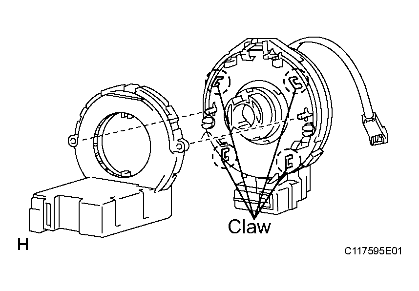

STEERING ANGLE SENSOR (w/VSC): Installation
- INSTALL STEERING SENSOR
- Install the steering sensor to the spiral cable.
NOTE:
- Install the claw securely.
- Do not damage the claw fittings.
- ADJUST FRONT WHEEL TO CENTER
- ADJUST SPIRAL CABLE SUB-ASSEMBLY

Courtesy of © TOYOTA, LICENSE AGREEMENT TMS1002
- INSTALL STEERING COLUMN COVER
- INSTALL STEERING WHEEL ASSEMBLY
- INSPECT STEERING WHEEL CENTER POINT
- INSTALL STEERING PAD ASSEMBLY
- CONNECT CABLE TO NEGATIVE BATTERY TERMINAL
- INSPECT STEERING PAD ASSEMBLY
- CHECK SRS WARNING LIGHT
- Check the SRS warning light (see
PROBLEM SYMPTOMS TABLE
).
- PERFORM VSC SYSTEM CALIBRATION
- Perform VSC system calibration (see CALIBRATION
).
- CHECK ABS WARNING LIGHT
- Check the ABS warning light (see ABS WARNING LIGHT REMAINS ON
).
- CHECK VSC WARNING LIGHT
- Check the VSC warning light (see ABS WARNING LIGHT REMAINS ON
).